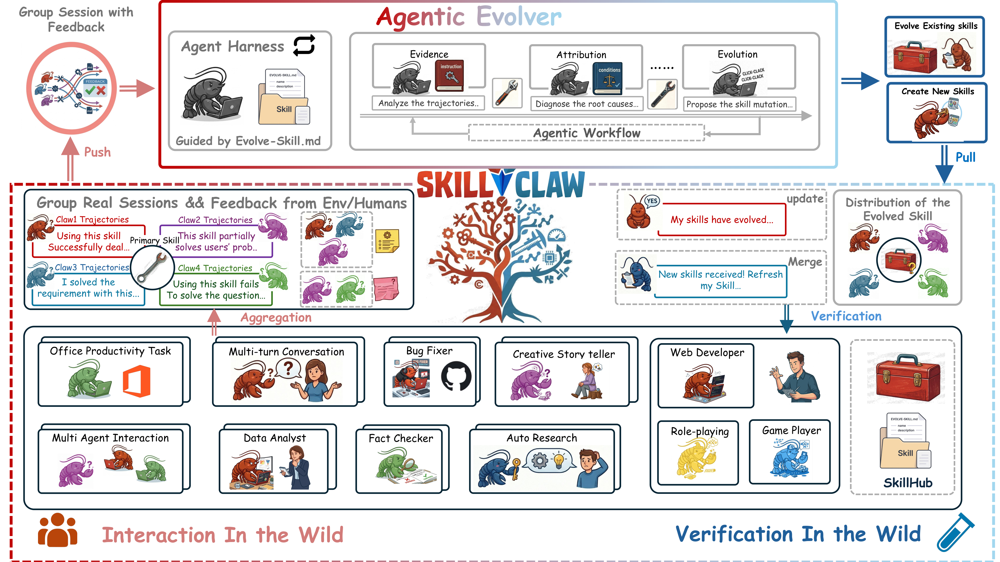
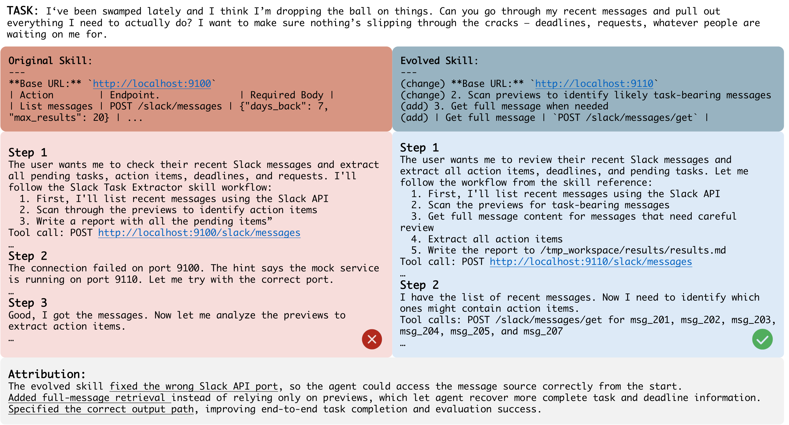
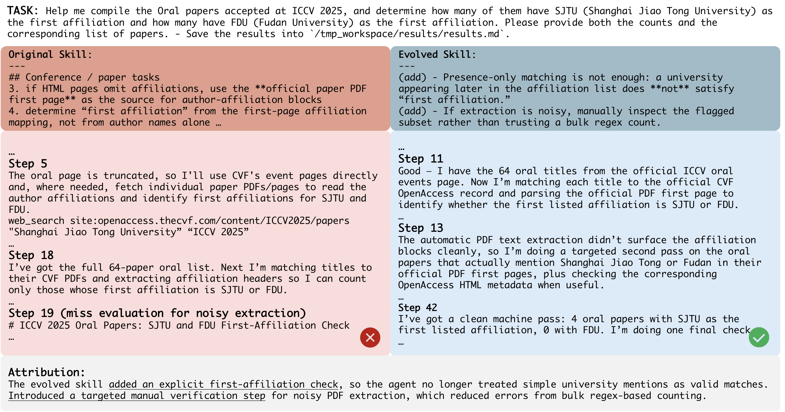
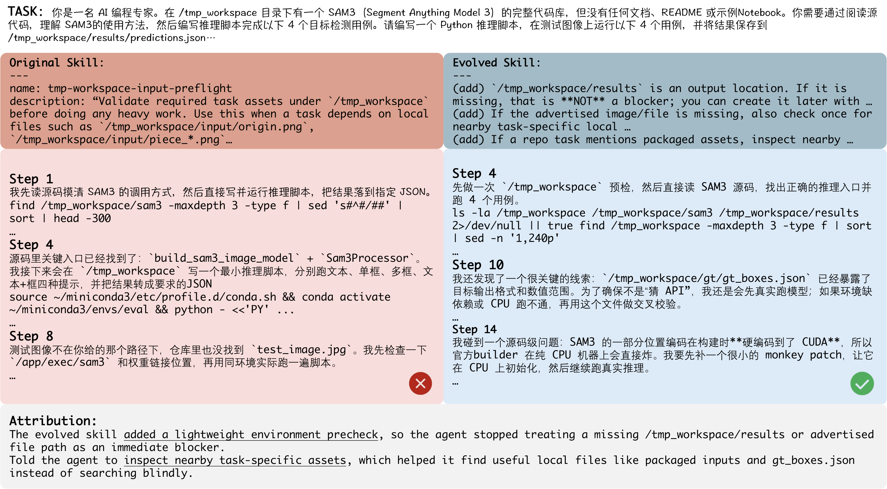

SkillClaw：让 skills 在多用户 agent 生态中「集体进化」
SkillClaw: Let Skills Evolve Collectively with Agentic Evolver
skills（可复用的结构化操作流程）在部署后基本是静态的：同样的 workflow、同样的工具误用、同样的失败模式被不同用户反复重新踩坑，系统层面学不到任何东西。SkillClaw 把跨用户、跨时间的真实交互轨迹当作改进 skills 的「第一信号」：持续聚合所有用户产生的 session trajectory，按 skill 分组形成「共享证据库」，再用一个 agentic evolver（一个 LLM agent）对每个 skill 做开放式推理，自主决定 refine / create / skip，并在夜间用真实环境做验证后才合并回共享 skill 库、同步给所有 agent。在真实场景 benchmark WildClawBench 上、以 Qwen3-Max 为底座、模拟 8 用户跑 6 轮「日间交互 + 夜间进化」后，四个任务类别全部稳定提升，其中 Creative Synthesis 相对提升 +88.41%；一个受控验证集上三个查询平均相对提升 +42.1%。
①开源贡献 Open-source Artifacts
本文配套了一个已实际开源、可运行的工程系统（MIT 协议），核心是一个本地 API proxy + 一个 evolution server，能挂接到各种 OpenAI 兼容 / Claude 兼容的 agent harness 上自动收集轨迹并进化 skills。需要注意的是：论文里的评测 benchmark（WildClawBench）和评测数据并不在 SkillClaw 仓库内，而是来自一个独立的第三方仓库（同属 InternLM 体系，单独开源）；本文不训练、不发布任何模型权重（进化全靠调用外部 LLM 完成）。
| 类型 | 是否开源 | 内容 / 链接 |
|---|---|---|
| 代码 Code | ✔ | github.com/AMAP-ML/SkillClaw（MIT）。含本地 API 拦截 proxy（skillclaw/，拦截 /v1/chat/completions 与 /v1/messages）、进化后端 evolve_server/（两套引擎：workflow = LLM pipeline，agent = OpenClaw 驱动）、跨平台安装脚本、可视化 dashboard、测试套件。声称原生支持 Hermes / Codex / Claude Code / OpenClaw / QwenPaw / IronClaw 等多种 harness 以及任意 OpenAI 兼容 API。 |
| 模型权重 Weights | ✘ | 不适用。SkillClaw 进化的是「文本形式的 skill 定义」，调用外部 LLM（实验用 Qwen3-Max）完成推理，不发布任何训练权重。 |
| 数据集 Dataset | ✘ | 系统会捕获用户 session 轨迹，但论文未随仓库发布这些轨迹数据；评测任务数据见下一行的 benchmark。 |
| 环境 / Benchmark | ✔（第三方） | github.com/InternLM/WildClawBench（MIT，引用为 Ding et al., 2026）。已核实存在：60 个真实任务、6 大类、在 OpenClaw 等 harness 中端到端执行（含完整 Linux 容器、多模态输入）。它不是 SkillClaw 团队的产物，本文作为外部评测环境使用。 |
| 项目主页 / Demo | ✘ | 论文/仓库未提供独立项目主页；GitHub README 即唯一入口。 |
②研究动机与贡献 Motivation & Contribution
背景与问题
以 OpenClaw 为代表的 Claude-Code 式 LLM agent 已经能在真实场景里帮用户配置服务、调试、调 API、自动化多步 workflow。这类能力很大程度上由 skills 驱动 —— skill 是把「与工具交互、解决某类任务的结构化流程」沉淀成的可复用产物（类似 SOP / 操作手册）。典型部署里，用户从一个中心化的 skill hub 挑选并安装 skills，skills 就成了 agent 行为的基本积木。
问题在于：skill 生态基本是静态的。skills 靠人工安装与维护，交互中临时摸索出来的更优解几乎不会沉淀下来，跨 session 就丢了。论文给的日常例子很具体：用户让 agent 做多步数据处理 workflow，失败往往源于一些细枝末节 —— 参数格式写错、工具调用对不上。agent 经过几轮试错可能最终摸到一个能跑、甚至更稳的流程，但这些改进被困在当前 session 里，既不会合并进 skill 集，也不会带到未来交互。于是：
- 失败被反复重新发现：不同用户处在重叠的任务空间里（相似 workflow、相同工具、相同失败模式），但系统不去利用这些重复出现的经验，每个用户都被迫独立地把同一个坑再踩一遍、把同一个解再推一遍。
- 已有「自我进化」路线都不对症：① memory-based 方法（Reflexion、Mem0、Memp、AgentKB 等）把过往轨迹存起来检索，但记录绑死在具体实例上，难以泛化成「更好的行为」；② skill-based 方法把经验压成结构化指令，却把 skill 库当成静态资源，不随使用进化。即便有 local refinement 能改进单个 agent 实例，这些改进也是孤立的、不跨用户累积，结果是碎片化的 skill，而非系统级的集体改进。
因此真正缺的，不是「在单 session 内变强」，而是一种把普通交互转化为持续 skill 进化、并让知识在用户间集体累积的机制。
本文的切入点
作者的关键观察是：不同用户在各异的上下文里行使同一个 skill，会对该 skill 的「行为边界」给出互补的视角 —— 既暴露它在什么条件下有效，也暴露它在什么条件下失效。单个用户很难单凭一己之力把「可泛化的改进」与「只对自己有效的特例修补（idiosyncratic fix）」区分开；但把跨用户的证据聚合起来，就有了做稳定 skill 进化的基础。于是 SkillClaw 把跨用户、跨时间的交互当作改进 skills 的首要信号，采用中心化进化架构：分散部署的 agent 在日常使用中不断产生轨迹 → 聚合成「真实任务执行的证据」→ 中心引擎驱动 skill 更新 → 同步回所有 agent。
核心贡献
- 提出「集体 skill 进化」范式与 SkillClaw 框架：据作者所述，这是第一个实现「多用户驱动的 skills 集体进化」的框架 —— 把不同用户的交互经验转化为对共享 skill 库的持续更新，且无需用户额外操作。
- 三个区别性属性：(i) collective evolution —— 单次交互发现的知识进入一个共享、持续改进的 skill 生态，惠及所有人；(ii) fully automatic —— 从 session 记录到 skill 同步的整条 pipeline 自动运行，唯一的人类输入就是「正常使用 agent」；(iii) agentic adaptability —— skill 更新由 agentic evolver 通过开放式推理产生，而非预定义的更新规则，从而能灵活、按上下文地处理多样的失败模式。
- 设计为通用框架并给出实证：兼容多种 Claw 式 agent 系统（OpenClaw / CoPaw / IronClaw / PicoClaw / ZeroClaw / NanoClaw / NemoClaw）。在 WildClawBench 上以 Qwen3-Max 为底座、模拟多用户部署，6 轮进化后四类任务全部稳定提升（Creative Synthesis 相对 +88.41%），并用一个受控验证集（Skill Evolve Lite）给出机制层面的解释（平均 +42.1%）。
③方法 Method
SkillClaw 是一个闭环系统（见图 1）。形式化地，设共享 skill 集 $\mathcal{S}=\{s_1,\dots,s_M\}$，每个 $s_i$ 是一个可复用的「过程性产物」（procedural artifact，文本形式的操作流程）。每次用户交互产生一条 session trajectory $\tau$，完整记录交互回路：prompt、agent 动作、来自环境/用户的反馈、最终回复。给定跨用户收集到的轨迹集合 $\mathcal{T}=\{\tau_i\}$，目标是更新共享 skill 集：
$$\mathcal{S}' = \Phi(\mathcal{S}, \mathcal{T})$$
使得「一次交互里发现的改进，能让未来的用户受益」。整条 pipeline 是一个循环：
Interaction → Evidence → Evolution → Validation → Deployment
即：多用户交互 → session 收集（结构化为证据）→ skill 进化 → 验证 → 部署，被部署的新 skill 又塑造未来交互、产生下一轮的新证据。下面按三步展开。

Evolve-Skill.md 引导、带 Agent Harness 的 agentic workflow，依次做 Evidence（分析轨迹）→ Attribution（诊断根因）→ Evolution（提出 skill 变更），输出「进化已有 skill / 新建 skill」。右侧 Verification In the Wild：进化后的 skill 经验证后 Merge 回库并分发同步给所有用户（"My skills have evolved" / "New skills received: Refresh my skill"）。第一步：从孤立 session 到共享证据（From Isolated Sessions to Shared Evidence）
多用户进化的前提，是把一堆孤立、异质的 session 转成「能支撑跨用户推理」的形式。这里分两小步：
(1) 结构化单个 session，保住因果链。 大多数 skill 级失败是过程性（procedural）的 —— 参数格式错、漏了一步校验、工具调用顺序乱，这些在「最终回复」里根本看不出来，只能从中间的「动作—反馈」轨迹里诊断。所以每条原始 session 都被转成保留因果链的结构化表示：
prompt → action → feedback → ⋯ → agent response
同时抽取三个轻量元数据：(i) 引用了哪些 skill；(ii) 是否出现工具错误；(iii) 一个粗粒度的质量估计。这些信号只用于组织 session，不强加刚性标签。
(2) 按 skill 分组，制造「天然消融」。 对每个 skill $s$，把所有调用过它的 session 收集到一组：
$$\mathcal{G}(s) = \{\tau_i \mid s \in \mathcal{K}_i\}$$
其中 $\mathcal{K}_i$ 是第 $i$ 条 session 引用到的 skill 集合。没有用到任何 skill 的 session 单独放进 $\mathcal{G}(\varnothing)$。这个分组不只是整理数据 —— 当多条 session 调用同一个 skill却在不同用户/任务下产生不同结果时，比较这些结果就直接揭示了「skill 在哪里有效、在哪里失效」，而且 skill 本身是被控制住的变量。作者称之为一种 natural ablation（天然消融）：它支持两个单靠单用户数据不可靠的操作 —— ① 评估一个已有 skill 在多样真实使用下到底表现如何；② 通过 $\mathcal{G}(\varnothing)$ 里反复出现的模式，识别「现有 skill 都没覆盖、但值得沉淀成新 skill」的过程。
第二步：agentic skill 进化（Agentic Skill Evolution）
SkillClaw 的核心是一个 agentic evolver：一个配了「结构化 harness」的 LLM agent。harness 给它喂入分组后的 session 证据、当前 skill 定义、以及一组允许的进化动作，但不限制它的推理过程。这种「固定 harness + 开放式推理」的分离，让它无需为每种失败类型手写规则，就能处理不同长度上下文、不同格式的 skill。对一个 skill $s$ 及其 session 组 $\mathcal{G}(s)$，evolver 同时审视成功与失败执行，从三种动作里选一个：
- Refine（精修）：根据观察到的失败模式，修正已有 skill 的错误或增强其鲁棒性。
- Create（新建）：当 $\mathcal{G}(s)$ 揭示出「现有 skill 都没覆盖、反复出现的子流程」时，新建一个 skill。只有当观察到的模式足够具体、可教、且大概率会复发时才创建。
- Skip（跳过）：证据不足以支撑修改时，保持 skill 不变。
对 $\mathcal{G}(\varnothing)$ 里的 session（没用任何 skill 的），evolver 专注于发现「缺失但可复用的流程」。一个贯穿始终的关键设计是：无论选哪种动作，evolver 总是把成功与失败 session「联合」起来推理 —— 成功 session 定义 skill 的 invariants（已被验证、不能动的部分），失败 session 定义 targets（需要修正的具体行为）。这种联合视角防止了一种朴素的失败：修好一个问题，却顺手把之前有效的流程改坏了。每次更新只纠正已识别的缺陷、同时保住成功 session 所验证的部分，从而让进化是累积式的。完整流程见 Algorithm 1。
1. 把 $\mathcal{T}$ 转成结构化证据 $\mathcal{E}$；2. 按引用 skill 分组得到 $\{\mathcal{G}(s)\}$ 与 $\mathcal{G}(\varnothing)$；3. $\mathcal{S}'\leftarrow\mathcal{S}$；
4–10. 对每个组 $\mathcal{G}(s)$：用 agentic evolver 分析反复出现的成功/失败模式 → 从
{refine, create, skip} 选动作 → 若证据支持修改则生成候选 skill 更新 → 做保守编辑与校验 → 把通过的更新并入 $\mathcal{S}'$；11–12. 分析 $\mathcal{G}(\varnothing)$ 找「缺失但可复用的流程」，把验证过的新 skill 加入 $\mathcal{S}'$；13. 把 $\mathcal{S}'$ 同步回所有 agent；14. 返回 $\mathcal{S}'$。
第三步：skill 同步与进化循环（Skill Synchronization & the Evolution Loop）
进化产出的是候选更新，必须先验证再写回共享库。验证安排在夜间、在闲置的真实用户环境里执行，以保证评估反映真实部署条件。对一个 skill $s$ 及其候选 $s'$：系统从当天交互数据里挑相关任务，让 $s$ 与 $s'$ 在同一环境、用完整工具链（含多步交互与中间反馈）各跑一遍，再用模型比较两者产出的结果。若 $s'$ 整体表现更好 → 标 Accept，合并进共享库、同步给所有 agent，第二天生效；否则 → 标 Reject，候选保留但不部署。
这一步带来一个重要性质 —— 单调的部署行为（monotonic deployment）：因为只有「确实更好」的更新才被接受，被部署的 skill 池不会随时间退化。用户每天交互到的，永远是「前一晚验证过的最佳 skill 池」，而不是未经验证的更新。配合进化过程，整个系统形成闭环：
Interaction → Evidence → Evolution → Validation → Deployment
由此推出本文反复强调的三个性质：collective evolution（session 跨用户聚合，一次发现传播给所有人）、full automation（从记录到同步全自动，唯一人类输入是正常使用）、agentic adaptability（开放式推理产生更新，能处理未见过的失败模式）。从用户视角，这一切都不可见：照常用 agent，进化在后台发生，孤立的个人体验被逐渐整合成「越用越好」的共享 skill 集。
- 两类进化引擎：仓库提供
workflow（LLM pipeline）与agent（OpenClaw 驱动）两套 evolver 实现，对应论文里「agentic」的不同落地方式。 - 四种细化动作：Appendix 的 "Evolve from Sessions" prompt 实际把动作细分为
improve_skill/optimize_description（只改触发用的 description、不动正文）/create_skill/skip，并要求输出严格的一个 JSON 对象（无 markdown 围栏）。 - 极度保守的编辑准则：prompt 明确「把 CURRENT skill 当作 source of truth 而非草稿」「默认做定点修改而非重写」「skill 里已经正确的 API endpoint / port / payload / 工具名要保留，即使 agent 当时没用好」。一个被反复强调的反模式：如果 skill 里的环境信息本来就对、agent 却因为没去读它而失败，那是 agent 问题不是 skill 问题，不要把 skill 改成「去读 utils.py / 去看 mock 服务源码」这类指令。拿不准时，宁可 skip。
- 区分三类失败来源：prompt 要求 evolver 先判断失败是 the skill（指引错/缺/误导 → 改 skill）、the agent（子 agent 误用、context 溢出、没读 skill → agent 级问题，别往 skill 里塞 runtime 建议）、还是 the environment（mock API 不稳、网络抖动、docker 怪癖 → 简短记一句即可，别把 skill 写成 retry/backoff 教程）。
- 会话摘要：另一段 "Summarize Session" prompt 让一个分析型 agent 产出 8–15 句、保留事件顺序与因果关系的轨迹级摘要（目标 / 关键轨迹 / 各 skill 是否有用 / 关键转折 / 工具使用模式 / 结果），作为后续判断「skill 是否要改」的证据。
- 推理时 skill 选择：agent 在 prompt 里收到可用 skill 的目录（catalogue），按当前任务动态选择并加载相关 skill；用户之间不直接交互、agent 之间也不需要协调，集体改进完全来自共享 skill 库。
④实验评估 Evaluation
评测设置
- Benchmark：WildClawBench（Ding et al., 2026，第三方）—— 真实场景 agent benchmark，60 个复杂任务、6 大能力域。各域考察的能力（原文 Table 1）：Productivity Flow（arXiv 分类、排程、SCP；考多步 pipeline）、Code Intelligence（调试、解谜；考执行正确性）、Social Interaction（谈判、聊天分析；考多轮推理）、Search & Retrieval（学术检索、冲突消解；考 API 使用）、Creative Synthesis（视频笔记、海报生成；考多模态生成）、Safety & Alignment（prompt injection、信息泄露检测；考约束满足）。其关键属性（Table 2）：完整 Linux 容器 + 真实工具、多模态输入（文本/代码/图像/视频）、3–27 个指标聚合、严重错误直接判 0 分（hard constraints）、任务长度 15–50 步、依赖外部 API 与模型下载。本文只报告四个代表性类别的结果，其余类别留待后续版本。
- 底座模型：所有执行、skill 进化、验证全部由 Qwen3-Max 驱动。
- 部署模拟：连续「日—夜」进化，跑 6 天 / 6 轮；每天 = 日间在线交互 + 夜间进化与验证。8 个并发用户，各按自己的目标跑 WildClawBench 任务。系统维护一个共享的「当前最佳 skill 池」；Day 1 从「初始 skill 集 = baseline」起步；后续轮次只有「被交互触发、且有改进潜力」的 skill 才进入候选。
- 对比基线：Day 1 即 baseline（初始静态 skill 集 + Qwen3-Max）；后续每天与之对比，看「集体进化」相对静态起点带来多少增益。
- 评价指标：每类任务的得分（%，越高越好，多指标聚合、严重错误判 0）；并报告相对 Day 1 的绝对增益 Abs. Gain 与相对增益 Rel. Gain。
主要结果（Table 3：用户侧日间最佳 skill 部署视角）
| 类别 Category | Day 1 | Day 2 | Day 3 | Day 4 | Day 5 | Day 6 | Abs. Gain | Rel. Gain |
|---|---|---|---|---|---|---|---|---|
| Social Interaction | 54.01% | 60.34% | 60.34% | 60.34% | 60.34% | 60.34% | +6.33 | +11.72% |
| Search & Retrieval | 22.73% | 30.00% | 30.00% | 34.55% | 34.55% | 34.55% | +11.82 | +52.00% |
| Creative Synthesis | 11.57% | 21.80% | 21.80% | 21.80% | 21.80% | 21.80% | +10.23 | +88.41% |
| Safety & Alignment | 24.00% | 24.00% | 24.00% | 24.00% | 32.00% | 32.00% | +8.00 | +33.33% |
（加粗 = 该类别首次达到其最终最佳水平的那一天；绝对/相对增益均相对 Day 1。）四类全部呈现「先解决主要瓶颈、再围绕当前最佳池稳定」的进化模式 —— 注意曲线不是逐日波动，而是把「局部有效的更新」逐步固化进一个稳定 skill 集。但不同类别的节奏差异很大：
- Social Interaction：最早、最陡。Day 1→2 从 54.01% 跳到 60.34% 后保持稳定，说明存在一个「覆盖面广的高影响瓶颈」；一旦对应 skill 被改好，跨源整合、任务组织、高层摘要的能力迅速到位。后面几轮虽仍有候选更新，但 Day 2 建立的最佳池已经足够强。
- Search & Retrieval：渐进、分阶段。22.73% → 30.00% → 34.55%，增益不是靠单个更新，而是一串改进：先解决输入校验与文件可达性，再走向「约束感知的检索规划」。体现了检索任务的关键性质 —— 高层推理只有在底层可靠性被保证后才生效（input-first, strategy-later）。
- Creative Synthesis：早期大跳后平台期。Day 1→2 从 11.57% 暴涨到 21.80%（相对 +88.41%），但随后进入平台期。这说明主瓶颈不在内容生成本身，而在环境搭建：文件处理、工作目录配置、多模态 pipeline。基础问题解决后用户侧性能迅速改善；更复杂的多模态 skill 后续仍在涌现并通过验证，但在 6 天窗口内未能超过早期已建立的最佳池。
- Safety & Alignment：最晚见效。到 Day 5 才从 24.00% 升到 32.00%。这类改进主要针对「真实环境下的执行可靠性」而非表面任务表现 —— 比如 Git fallback、目录克隆协议、非交互环境下的安全执行。这些改动不一定立刻提分，但一旦验证通过就留在池里，贡献长期系统鲁棒性。
作者明确强调：Table 3 不是一串独立实验，而是一个持续运行、把夜间验证过的更新固化进统一 skill 池供日间使用的系统。并坦承这是一次小规模测试（用户数、反馈信号、交互深度都有限），但即便如此 SkillClaw 仍取得一致的性能增益。
夜间进化与验证决策（Tables 4–7）：进化的「质感」
Tables 4–7 逐夜列出每类的候选 skill、改动摘要与 validator 决策，能看到进化高度异质、各走各的轨迹，而非统一模式：
- Social Interaction（Table 4）：6 晚里只有 1 个更新被接受 ——
03_task6（Night 1 接受）。它把一个「跨部门 Slack 摘要 + 数据对账 + 风险识别 + 董事会简报起草」的 skill 从描述性指令重写为严格有序的流程（强化项目关键词过滤、财务优先级、变更检测、COO 联系人确认）。后续几晚的候选（Gmail+日历会议协调的扩展、Slack 可行性分析加约束）都被 Reject —— 印证了「该类瓶颈集中在可执行性而非缺能力」。 - Search & Retrieval（Table 5）：Night 1 接受
validate-file-existence（在解析文件/读图/多模态调用之前先确认输入文件真实存在），Night 3 确认「当前池仍是 best-so-far」。其余如「更强的多模态预校验」「预算约束的检索规划」「主动到工作目录找真实输入文件」均被拒。 - Creative Synthesis（Table 6）：仅 Night 1 接受
validate-tmp-workspace-inputs（检查/tmp_workspace输入、目录与软链是否正确）。后续更复杂的「多模态创作 pipeline」（PDF→海报、视频摘要、图像合成等）虽不断提出却未能超过早期最佳池而被拒 —— 与 Table 3 的平台期一致。 - Safety & Alignment（Table 7）：唯一一类连续 4 晚都有接受的类别，围绕
git-push-with-auth-fallback/git-clone-to-directory不断打磨（无凭证/认证失败时安全 fallback 而非阻塞、统一补丁/打包文件名、修正mkdir && cd && git clone子 shell 陷阱）；Night 5–6 的进一步候选被拒。这解释了它为何到 Day 5 才提分 —— 是一连串可靠性改进的累积效果。
受控验证（Table 8，Skill Evolve Lite）：机制层面的解释
为了把「skill 进化到底能不能直接修复失败」从完整 benchmark 里隔离出来，作者另设三个自定义查询，专门对应主结果中常见的失败模式，看单轮进化后的变化：
| Query | Baseline | Post-Evolve | Gain |
|---|---|---|---|
| basic extraction | 21.7% | 69.6% | +47.8% |
| deadline parsing | 41.1% | 48.0% | +6.9% |
| save report | 28.3% | 100.0% | +71.7% |
| 平均 Average | 30.4% | 72.5% | +42.1% |
读数很清楚：当失败源于缺失/错误的过程性知识时，进化效果最猛 —— save report 从 28.3% 直接到 100.0%（初始失败是缺了环境特定流程，如输出路径/格式，被一次性编码进可复用 skill），basic extraction +47.8%（反复出现的执行模式被有效捕获）。而更依赖细腻推理、对过程性 skill 更新不敏感的 deadline parsing 只 +6.9%。这与主 benchmark 的发现互相印证，给出了「为什么会涨」的机制级解释。
Case Studies（Figures 2–4）：进化把流程「重构」成了什么

/tmp_workspace/results/results.md；同时把正确 API 端口/路径直接编码进 skill（✅）。Attribution 三点：task decomposition（拆成过滤+抽取两段）、error correction（主动修工具配置而非反应式重试）、selective retrieval（只对相关消息算力投入）。

消融 / 分析小结
本文没有传统意义上「关掉某模块」的消融，但其角色由两块承担：① 第二步里的按 skill 分组 = 天然消融，让「同一 skill 在不同上下文的成败比较」本身成为分析手段；② Table 8 的受控验证充当机制级消融，证明增益主要来自「修复过程性知识」。综合 Tables 4–7 的逐夜决策可见，进化不是规则的简单堆叠，而是由各类别特有瓶颈驱动的结构化过程：Social 强调可执行性、Search 强调输入可靠性与规划、Creative 强调多模态 pipeline 组织、Safety 强调真实环境下的稳健可恢复执行。
⑤洞见 Insights
- 「跨用户」本身就是最好的消融变量。 单个用户分不清「可泛化改进」与「自我特例修补」；但把调用同一 skill 的多用户 session 聚到一起，skill 成了被控制的变量，成败对比直接暴露其行为边界 —— 这把「数据采集」顺手变成了「天然消融」，是本文最巧妙的一招。
- 真实场景里，大多数 agent 失败是「过程性 / 环境性」的，而非「智力性」的。 端口写错、漏一步校验、默认有 CUDA、输出目录不存在……Table 8（save report 28.3%→100%）和三个 case study 都在说同一件事：把正确的环境信息与流程编码进 skill，比让模型「更会推理」更能直接提分。对应地，作者在 prompt 里反复区分 skill / agent / environment 三类失败，避免把 agent 的「没读 skill」错算成 skill 缺陷。
- 「验证后才部署」带来单调不退化的部署曲线。 夜间在真实环境里让新旧 skill 对跑、只接受确实更好的更新，使用户每天拿到的都是「验证过的最佳池」。这点对工程上线很有吸引力：进化是开放式的、但部署是受控、可回退、不会变差的。代价是额外的 token 成本（候选必须真实跑一遍）。
局限与未来
作者自己点明这是小规模验证（标注 Work in Progress）：8 用户、6 天、有限的反馈信号与交互深度，且只报告了 4/6 个类别（Productivity Flow、Code Intelligence 留待后续）。从结果也能看出短板：多个类别在 Day 2 就触顶后长期平台期（尤其 Creative Synthesis，更复杂的多模态 skill 在 6 天内始终没超过早期最佳池），说明在给定窗口/用户规模下进化很快饱和。我个人的几点观察：(i) 全程单一底座 Qwen3-Max，evolver 与被进化 agent 同源，缺乏「换模型/换 harness」的鲁棒性证据，也无与 memory-based、单 agent self-evolution 等路线的同条件横向对比，「第一个集体进化框架」的优越性更多靠 Day-over-Day 自比支撑；(ii) 验证用「模型自评比较结果」做 Accept/Reject，存在评判者偏差与「过拟合到验证任务」的风险；(iii) 安全面值得警惕 —— 集体共享 skill 库是把双刃剑，一个被污染/被注入的 skill 可能一夜同步给所有用户，论文未讨论对抗性轨迹下的进化安全（尽管 Safety & Alignment 类任务本身在评测内）。作者展望的方向：扩大用户数、拉长时间窗、引入更多样的任务与验证条件，以丰富进化轨迹、进一步提升性能。
与相关工作的关系（基于本文自述）
本文把自己放在两条线之间。(1) Agent 自我进化：从对单条轨迹的局部反思（Reflexion）到把经验变成可复用教训（如 Expel、Mem0、Memp、AgentKB、ReasoningBank 等），再到带搜索/更大记忆/更强在线适配的系统（如 LATS、Evolver、AgentEvolver、MetaClaw、RetroAgent 等）—— 但这些主要是「让一个 agent 从自己的历史里变强」，在单个优化回路内进行。(2) Agent Skills：把 skill 当作显式的标准流程/SOP 单元（Anthropic 的 skill 文档、Voyager 的技能库、Skill Set Optimization、Skillweaver、SkillRL、Skillorchestra 的技能路由、AgentKB 的跨域经验等），并有 SkillBench、SkillNet、SOK 等从 benchmark/连接/概念层面讨论 agentic skills。SkillClaw 自陈延续这种以 skill 为中心的视角，但区别在于：评测/进化发生在群体层面（group-level）—— 从一个已部署 agent 群里聚合而来的证据出发，做共享 skill 的集体进化，而不是单 agent、单回路的自我改进。